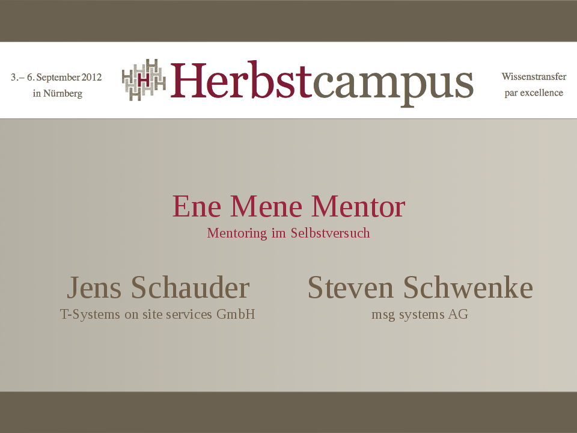

Warum sind wir hier?
Mentoren von Anfang an

Viele halbe Mentoren

Mitschüler
... mit denen man gemeinsam lernt
Lehrer
... die eine zu Jugend forscht lotsen
Kollegen
... die einen zur JAX mitnehmen
The good advice you just didn't take
Alanis Morissette / Ironic
Wo ist mein Mentor?
Wo ist mein Mentee?
?
Mentoren / 2


Erster Arbeitgeber,
neue Ziele.
neue Ziele.

 (Atlas Detector, CERN)
(Atlas Detector, CERN)

Mission Statement:
- Offenheit
- Ehrlichkeit
- Exit-Strategie ohne "hard feelings"
Steven "Killer-Feature" Mentoring:
- Commitment.
- Beidseitige Weiterentwicklung.
Jens "Killer-Feature" Mentoring:
- Reflektion eigener Ideen durch Gruppengespräche
- organisierte Peer-Group für eigene Ideen
Werkzeuge:
- Treffen einmal pro Monat:
- Gespräch
- Buchvorstellung
- "Was gelernt?"
- Commitment: Stets Fragen stellen können
Werkzeuge:
- Technische Fragen stellen
- Rat holen
- Commitment: Jederzeit, z.B. per Handy
Werkzeuge:
- Entwürfe Blog-Artikel gegenlesen
- Commitment: Ehrlichkeit, no hard feelings auf Empfängerseite
Werkzeuge:
- Gemeinsame Vorträge, Konferenzen
- Commitment: Gegenseitig fördern (soweit möglich)
Herbstcampus 2012.
Zukunft:
- evtl. Ortswechsel
- agiles Anpassen Mentoring
- Offenheit, Ehrlichkeit, konstruktive Kommunikation
Zukunft:
- "Konvergenz" des Mentorings
- Kompliment schnell lernender Mentee + gut lehrender Mentor
Zukunft:
- gegenseitig im Auge behalten
- spätere fachliche Kontakte
- Vitamin B
Konzepte:
- "halbe" Mentoren
- organisiertes Mentoring Unternehmen
- freiwilliges Mentoring
- freiwilliges organisiertes Mentoring (Freimaurer, Lions Club, Maybach-Foundation)
Überall Mentees / Mentoren - auch hier im Raum!